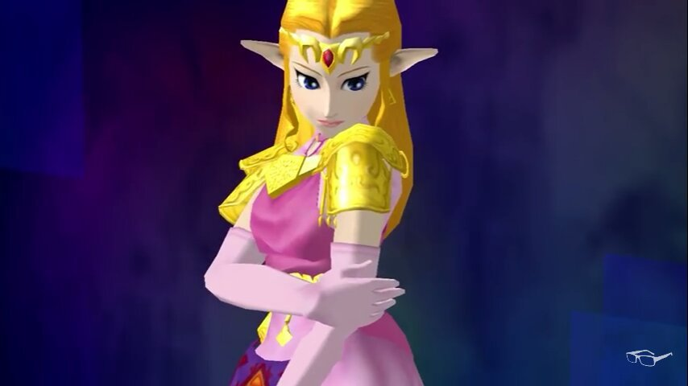

Who is Lilith?
lilith is a talented artist who currently resides in canada and specializes in both Contemporary and digital art forms. She is currently in school for her art degree, most of the work she does is from classroom assignments. In her free time, she enjoys playing alot of video games, which often inspires her art. She has a particular fondness for characters from Devil May Cry, Elden Ring, and others.